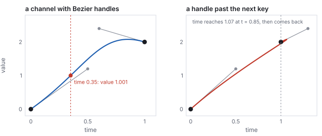
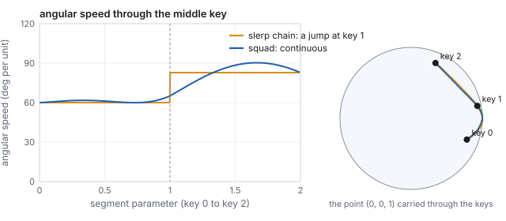
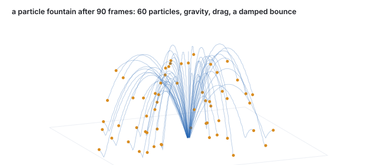
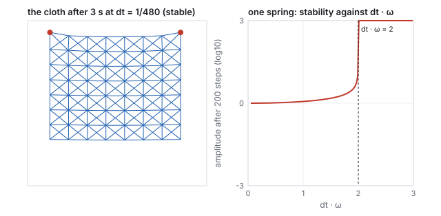

This chapter links to the course’s interactive demos and uses MathJax for its
formulas. Read it through the course website (or download the file and open it in a
browser); a Canvas inline preview will reach neither the demos nor the math.
All chapters.
Animation and Interpolation: Keyframes, Easing, Rotations, Skinning, Simulation
CSS 551 · Advanced 3D Computer Graphics · course text
Course text · how a scene moves: keyframes and the curves between them, the curve editor’s handles, retiming with easing and the animator’s principles, interpolating rotations correctly through two keys and through many, blending transforms without shrinking, forward and inverse kinematics on a chain, the bind pose and skinning, and simulation from one spring to a particle system, a cloth and a bounce. Not tied to a lecture; pairs with the keyframe demo and the scene-graph chapter.
Everything earlier in the text places, views, builds, dresses and lights a scene at one instant. Animation is the function from time to all of that: positions, orientations, joint angles, vertex positions. Nobody authors that function frame by frame. An animator sets a few keyframes and the computer interpolates, and the whole subject is the question of what to interpolate and how. Positions interpolate along a curve, and the choice between straight hops and a spline is worked on the keyframe demo’s three keys; the curve editor that animators use is a Bézier in time with one constraint worked to the failure that breaks it. Time itself is interpolated by an easing function. Rotations must not be interpolated as matrices or Euler angles, and the chapter shows what goes wrong (a shrinking matrix, a collapsed joint), works the quaternion slerp between two keys, and the squad that removes the corner between three. A skeleton is the scene-graph chain of the scene-graphs chapter driven by angles, solved forward and, for one two-link arm, inverse; its bind matrices are computed with the course library, and skinning attaches a mesh to it with the blend that produces the classic collapsing elbow. The last third is simulation: a spring stepped two ways to show why the order of two lines of code decides whether the motion stays bounded, a particle fountain, a mass-spring cloth with the step-size bound derived and measured, and a bounce.
Definition (keyframe, in-betweening)
A keyframe is a value of some animated quantity at a stated time: a position, an angle, a color.
In-betweening (interpolation) produces the value at every other time from the keyframes on either
side. The curve through the keyframes as a function of time is the animation curve; every
animated property in a scene has one.
The keyframe demo has three keys, \(\mathbf{K}_0 = (-2.2, 0.5, 0)\), \(\mathbf{K}_1 = (0, 1.9, -0.6)\),
\(\mathbf{K}_2 = (2.2, 0.7, 0)\), at times \(0, \tfrac12, 1\), and one parameter \(t\). Its two modes
are the two simplest answers to the question of what lies between.
The demo’s keys, its two paths, and the two positions at \(t = 0.35\). The velocity of the linear path turns by \(66^\circ\) at the middle key; the spline’s velocity passes through continuously.
Worked example (linear in-betweening)
At \(t = 0.35\) the point is on the first segment, \(0.35 \times 2 = 0.7\) of the way from
\(\mathbf{K}_0\) to \(\mathbf{K}_1\):
\(\mathbf{K}_0 + 0.7\,(\mathbf{K}_1 - \mathbf{K}_0) = (-2.2 + 1.54,\; 0.5 + 0.98,\; -0.42) = (-0.66, 1.48, -0.42)\).
The velocity on the first segment is \(2(\mathbf{K}_1 - \mathbf{K}_0) = (4.4, 2.8, -1.2)\) per unit \(t\)
and on the second \(2(\mathbf{K}_2 - \mathbf{K}_1) = (4.4, -2.4, 1.2)\); at \(t = \tfrac12\) the direction
changes by \(66^\circ\) instantly. On screen the object turns a corner, and the eye reads the corner
as a jerk even though the position is continuous.
Worked example (the demo’s spline)
The smooth mode is a Catmull–Rom spline, the Hermite chain of
the curves chapter with tangents
\(\mathbf{m}_i = \tfrac12(\mathbf{K}_{i+1} - \mathbf{K}_{i-1})\). At an open end there is no neighbor, and
the library reflects one: \(\mathbf{p}_{-1} = 2\mathbf{K}_0 - \mathbf{K}_1 = (-4.4, -0.9, 0.6)\). The first
piece then runs from \(\mathbf{K}_0\) to \(\mathbf{K}_1\) with
\(\mathbf{m}_0 = \tfrac12(\mathbf{K}_1 - \mathbf{p}_{-1}) = \mathbf{K}_1 - \mathbf{K}_0 = (2.2, 1.4, -0.6)\) and
\(\mathbf{m}_1 = \tfrac12(\mathbf{K}_2 - \mathbf{K}_0) = (2.2, 0.1, 0)\). At \(t = 0.35\) the local parameter
is \(s = 0.7\), and the four Hermite weights are
\(h_{00} = 0.216\), \(h_{10} = 0.063\), \(h_{01} = 0.784\), \(h_{11} = -0.147\), so
\[
\mathbf{c}(0.35) = 0.216\,\mathbf{K}_0 + 0.063\,\mathbf{m}_0 + 0.784\,\mathbf{K}_1 - 0.147\,\mathbf{m}_1 = (-0.66,\; 1.671,\; -0.508),
\]
the demo’s smooth-mode readout. The \(x\) coordinate agrees with the linear path (the keys are
evenly spaced in \(x\)); the spline is \(0.19\) higher and \(0.09\) farther back, bulging outward past
the chord as it rounds the corner. At \(t = \tfrac12\) it passes through \(\mathbf{K}_1\) exactly, with
velocity \(2\mathbf{m}_1 = (4.4, 0.2, 0)\) per unit \(t\) on both sides.
See it liveThree keyframes, two
in-betweenings: scrub \(t\) across the middle key in linear mode and watch the direction snap;
switch to smooth and scrub again. The readout is the position of this section.
Pitfall (a spline is not a speed)
The Catmull–Rom parameter is not distance. On the demo’s spline the two pieces have
different lengths and the point covers them in equal time, and within a piece the speed varies
with the curvature, as the curves chapter measures on a
similar arch (speed \(6.7\) at the start, \(4.6\) at the top, \(9.5\) at the end). An object keyed
through unevenly spaced positions therefore speeds up and slows down for no reason the audience
can see. The fix is to reparametrize the path by arc length and drive the distance with an easing
curve, which is what a motion-path constraint in a production tool does.
2 · The curve editor: keys with handles
A production animation curve is one scalar channel per animated number (the \(x\) of a position,
one Euler angle, one blend weight) plotted against time, with a key at each keyframe and a pair of
Bézier handles at each key. Between two keys the channel is the cubic Bézier curve of
the curves chapter in the plane \((\text{time}, \text{value})\),
with the key positions as \(\mathbf{P}_0, \mathbf{P}_3\) and the handles as \(\mathbf{P}_1, \mathbf{P}_2\).
Definition (an animation channel segment)
Keys \((t_0, v_0)\) and \((t_1, v_1)\) with out-handle \(\mathbf{h}_0\) and in-handle \(\mathbf{h}_1\) define
\(\mathbf{B}(s) = (x(s), y(s))\) for \(s \in [0, 1]\) through \((t_0, v_0), \mathbf{h}_0, \mathbf{h}_1, (t_1, v_1)\).
The value at time \(\tau\) is \(y(s^*)\) where \(s^*\) solves \(x(s^*) = \tau\). The solve is
well-defined only if \(x(s)\) is monotone, which holds whenever both handles’ time coordinates
lie within \([t_0, t_1]\); editors clamp handles to enforce it.

One channel segment, and the same segment with an in-handle dragged past the next key. In the right panel \(x(s)\) is not monotone, and the channel has two values at time 1.
Worked example (reading a value off the channel)
Keys \((0, 0)\) and \((1, 2)\), handles \((0.5, 1.2)\) and \((0.6, 2.4)\). At time \(0.35\), bisection on
\(x(s) = 0.35\) gives \(s^* = 0.2888\) and the value \(y(s^*) = 1.001\). The initial slope is the
handle’s, \(1.2/0.5 = 2.4\) units per second, and the channel ends flat because the in-handle sits
above the key at \(2.4\) and the curve must come down to \(2\). Move the in-handle to \((1.3, 2.4)\) and
\(x(s)\) rises to \(1.066\) at \(s = 0.849\) before returning to \(1\): the channel takes the values
\(1.952\) and \(2\) at time \(1\), and the solve has no answer. Editors call the constraint
“non-overlapping handles” and either clamp the handle or switch the segment to a weighted
tangent mode where only the slope, not the handle length, is user-set.
Two special tangent modes matter. Flat tangents (handles horizontal) give the ease-in,
ease-out of Section 3 at every key and are the default in most tools. Stepped keys hold the
previous value until the next key, which is how a light switches or a visibility flag is animated,
and how blocking passes are previewed before the in-betweens are smoothed. A channel evaluated by
this root-find is expensive compared to a Hermite piece with a known parameter, so exporters bake
channels to dense samples or to Hermite tangents before they reach a game engine.
3 · Timing: easing, and the animator’s principles
A path fixes where; a second function fixes when. Real things accelerate from rest and decelerate to
a stop, and an object that starts at full speed looks pushed. An easing function
\(s(t)\) maps normalized time to normalized progress, and the position at time \(t\) is the path
evaluated at \(s(t)\): the same path, retimed. Disney’s animators named this principle
slow in and slow out.
Five easing curves. All agree at the ends and the middle; they differ in how hard they slow at the ends, which is how sharply the object appears to start and stop.
Worked example (smoothstep at \(t = 0.35\))
\(s(t) = 3t^2 - 2t^3\): \(t^2 = 0.1225\), \(t^3 = 0.042875\), \(s = 0.3675 - 0.08575 = 0.282\). The object is
\(28.2\,\%\) along its path when \(35\,\%\) of the time has passed; on the linear path that is
\((-0.96, 1.29, -0.34)\) instead of \((-0.66, 1.48, -0.42)\). The other curves at the same time:
smootherstep \(6t^5 - 15t^4 + 10t^3 = 0.235\), the cubic ease-in-out \(4t^3 = 0.171\), and the CSS
ease-in-out Bézier \(0.256\). Smoothstep has zero velocity at both ends and unit
slope \(1.5\) at the middle; smootherstep also has zero acceleration at the ends.
The CSS curve is a two-dimensional Bézier \((0,0), (0.42, 0), (0.58, 1), (1, 1)\) read as
\(s\) against \(t\), which needs the root-find of Section 2 to evaluate at a given \(t\); it is one
channel segment of the curve editor applied to time. Easing composes with everything else in the
chapter: a rotation slerped at \(s(t)\), a joint angle keyed at \(s(t)\).
Slow in and slow out is one of twelve principles that Disney’s animators codified for drawn
animation and that Lasseter (1987) carried over to computer animation. The ones that are geometry
have formulas.
principle
what it means on screen
in the machinery of this text
squash and stretch
a bouncing ball flattens on impact and lengthens in flight, at constant volume
a non-uniform scale \(S(s_x, s_y, s_z)\) with \(s_x s_y s_z = 1\), applied about the contact point by the pivot sandwich
anticipation
a small motion opposite to the main one before it starts
an extra key before the action, with an overshoot handle in the curve editor
follow-through, overlap
parts keep moving after the body stops, at different times
secondary channels offset in time; a spring or a delayed copy of the parent’s channel
slow in and slow out
ease at every key
Section 3’s \(s(t)\); flat tangents
arcs
natural motion follows curves, not straight lines
Section 1’s spline against its polyline
timing
the number of frames sets the weight of the object
the spacing of keys on the time axis
exaggeration, appeal, staging, secondary action, solid drawing, straight-ahead vs pose-to-pose
direction and design, outside the mathematics
Worked example (squash at constant volume)
A ball squashed to \(s_y = 0.5\) at the bounce is widened to \(s_x = s_z = 1/\sqrt{0.5} = 1.414\);
stretched to \(s_y = 1.5\) in flight, it thins to \(0.816\); at \(s_y = 2\), to \(0.707\). In every case
\(s_x s_y s_z = 1\), and the eye reads a rubber ball instead of a deflating one. The scale is applied
about the contact point for the squash and about the ball’s center along its velocity for the
stretch, which needs a rotation into the velocity frame first.
4 · Interpolating rotations: slerp and squad
Interpolating a rotation matrix entry by entry does not give a rotation. Halfway between the identity
and \(R_y(90^\circ)\), entry by entry, is
\(\tfrac12\bigl(I + R_y(90^\circ)\bigr)\), whose \(xz\) block is
\(\begin{pmatrix} 0.5 & 0.5 \\ -0.5 & 0.5 \end{pmatrix}\): a rotation by \(45^\circ\) times a scale of
\(0.707\), with determinant \(0.5\). An object interpolated that way shrinks by 29 % at the midpoint
and recovers. Halfway between the identity and a \(180^\circ\) rotation the matrix is zero and the
object vanishes. Interpolating Euler angles keeps the rotation valid but not the path: with three
angles changing at once the object swings along a curve that depends on the axis order, and near
gimbal lock it spins.
Definition (slerp)
For unit quaternions \(q_1, q_2\) with \(\cos\Omega = q_1\cdot q_2\),
\[
\mathrm{slerp}(q_1, q_2, t) = \frac{\sin\bigl((1-t)\Omega\bigr)}{\sin\Omega}\,q_1 + \frac{\sin(t\Omega)}{\sin\Omega}\,q_2,
\]
the great-circle arc between them on the unit sphere of quaternions, traversed at constant angular
speed. Every intermediate value is a unit quaternion, hence a rotation. If \(q_1\cdot q_2 < 0\), replace
\(q_2\) by \(-q_2\) (the same rotation) first, so the arc is the short one.
Worked example (slerp against the shortcut)
The rotation chapter’s pair: \(q_1 = (0, 0, 0, 1)\), the identity, and
\(q_2 = (0, 0.866, 0, 0.5)\), \(120^\circ\) about \(y\). Their dot is \(0.5\), so \(\Omega = 60^\circ\)
(half the rotation angle, as always for quaternions). At \(t = 0.25\) the weights are
\(\sin 45^\circ / \sin 60^\circ = 0.8165\) and \(\sin 15^\circ / \sin 60^\circ = 0.2989\), and
\(\mathrm{slerp} = (0, 0.2588, 0, 0.9659)\): since \(\cos 15^\circ = 0.9659\), that is a rotation of
\(30^\circ\) about \(y\), a quarter of the way as it should be. At \(t = 0.5\) it is \((0, 0.5, 0, 0.866)\),
\(60^\circ\). The cheap alternative, normalized lerp, blends the components and renormalizes:
at \(t = 0.25\), \(0.75\,q_1 + 0.25\,q_2 = (0, 0.2165, 0, 0.875)\), normalized \((0, 0.2402, 0, 0.9707)\),
a rotation of \(27.8^\circ\) instead of \(30^\circ\). It follows the same arc but not at constant speed:
slower near the ends, up to 10 % faster in the middle for this \(120^\circ\) arc, and the discrepancy
grows with the arc. Had we used \(-q_2 = (0, -0.866, 0, -0.5)\), the dot would be \(-0.5\),
\(\Omega = 120^\circ\), and the interpolation would swing \(240^\circ\) the other way around to reach
the same orientation.
Angle reached against \(t\) for the two interpolations. Slerp is linear in angle; normalized lerp is not, though it stays within a few degrees on an arc this size.
Hands-on
The course library builds quaternions from an axis and an angle; use it to check the slerp value
above without computing any sine:
Output: [ 0, 0.2588, 0, 0.9659 ], the slerp result at \(t = 0.25\).
Compute the normalized lerp by hand from the two quaternions and confirm \((0, 0.2402, 0, 0.9707)\), then its angle \(2\arccos 0.9707 = 27.8^\circ\).
Build \(q_2\) with the same call at \(120^\circ\) and check that its dot with the identity is \(0.5\).
Build \(-q_2\) by negating all four components and convince yourself, by rotating a point with the sandwich of the rotation chapter, that it is the same rotation.
Games often use normalized lerp anyway, because it needs no trigonometry and its speed error is
invisible over the small arcs between consecutive keyframes; slerp is the reference. Through
several orientation keys, slerping each pair in turn has the same defect as the polyline of
Section 1: the angular velocity jumps at every key. The fix is the quaternion analog of the
Catmull–Rom spline.
Definition (squad)
For keys \(q_0, q_1, \ldots\), define at each interior key the auxiliary quaternion
\[
s_i = q_i \exp\Bigl(-\tfrac14\bigl[\log(q_i^{-1} q_{i+1}) + \log(q_i^{-1} q_{i-1})\bigr]\Bigr),
\]
where \(\log\) of a unit quaternion \((\sin\tfrac\theta2\,\mathbf{u}, \cos\tfrac\theta2)\) is
\((\tfrac\theta2\,\mathbf{u}, 0)\) and \(\exp\) inverts it. Between \(q_i\) and \(q_{i+1}\),
\[
\mathrm{squad}(t) = \mathrm{slerp}\bigl(\mathrm{slerp}(q_i, q_{i+1}, t),\; \mathrm{slerp}(s_i, s_{i+1}, t),\; 2t(1-t)\bigr),
\]
a de Casteljau-style blend of two slerps that interpolates the keys with continuous angular velocity
(Shoemake, 1987). At the ends, \(s_0 = q_0\) and \(s_n = q_n\).

Three orientation keys interpolated by a slerp chain and by squad. The chain’s angular speed jumps at the middle key; squad’s passes through continuously, and its path rounds the corner.
Worked example (squad through three keys)
Keys: \(q_0\) the identity, \(q_1 = (0, 0.5, 0, 0.866)\), \(60^\circ\) about \(y\), and
\(q_2 = (0.25, 0.75, 0.433, 0.433)\), \(120^\circ\) about \(y\) followed by \(60^\circ\) about \(x\). The two
logs at the middle key are \(\log(q_1^{-1}q_2) = (0, 0.473, 0.546, 0)\) and
\(\log(q_1^{-1}q_0) = (0, -0.524, 0, 0)\); their sum scaled by \(-\tfrac14\) and exponentiated, then
multiplied by \(q_1\), gives \(s_1 = (-0.068, 0.506, -0.118, 0.852)\). At \(t = 0.5\) on the first
segment, plain slerp gives \((0, 0.259, 0, 0.966)\), \(30^\circ\) about \(y\), and squad gives
\((-0.018, 0.261, -0.031, 0.965)\), \(4.1^\circ\) away from it: squad has already begun to lean toward
the \(x\) rotation that the next key demands. At the key itself the slerp chain’s angular speed
jumps from \(60.0\) to \(82.8\) degrees per unit \(t\) (the two arcs are \(60^\circ\) and \(82.8^\circ\)
long and each takes one unit), and its axis turns by \(49^\circ\); squad’s speed is \(65.1\)
before and \(65.2\) after.
5 · Interpolating transforms
A node’s local transform in the scene-graph chain is the
TRS product of the affine chapter, and the rule for animating
it follows from Section 4: never interpolate the matrix. Interpolate the three parts separately,
translation and scale by a curve, rotation by slerp or squad, and rebuild \(T\,R\,S\) at each
frame. An animation file (glTF, FBX) stores exactly those three channels per node, each with its
own keyframes and interpolation mode (glTF offers step, linear, and cubic Hermite with explicit
tangents, the export form of Section 2), and the matrix is never stored at all. A matrix that must
be interpolated (from a tool that only exported matrices) is first decomposed into TRS, which is the
read-back of the affine chapter and which fails, as noted there, if the matrix has shear.
The same rule applies to a camera: interpolate the eye position and the look-at target, or the
eye and a quaternion, and rebuild the view matrix; and to a dolly, where the field of view is one
more scalar channel. Everything that is a matrix is rebuilt from things that are not.
6 · Skeletons: forward and inverse kinematics
A character’s skeleton is a scene graph whose nodes are joints and whose local transforms are
rotations about those joints; the arm of the scene-graph chapter, base, arm and hand, is a
three-joint skeleton. Forward kinematics is the composite rule: set the joint angles, multiply
down the chain, and the hand lands where it lands. Keyframing the angles and interpolating them with
slerp is how most character animation is authored.
Inverse kinematics asks the other question: where must the joints be for the hand to reach a
given point? For a chain of many joints the answer is not unique and is found numerically (cyclic
coordinate descent, which rotates one joint at a time to point the end effector at the target and
sweeps the chain repeatedly; or the Jacobian method, which linearizes the end-effector position in
the joint angles and takes a pseudo-inverse step toward the target). For two links in a
plane it is a triangle, and the law of cosines solves it.
Two-link planar IK
Links of lengths \(l_1, l_2\) from the origin to a target \(\mathbf{p}\) at distance \(d = |\mathbf{p}|\),
reachable when \(|l_1 - l_2| \le d \le l_1 + l_2\):
\[
\cos\theta_2 = \frac{d^2 - l_1^2 - l_2^2}{2\,l_1 l_2}, \qquad
\theta_1 = \mathrm{atan2}(p_y, p_x) - \mathrm{atan2}\bigl(l_2\sin\theta_2,\; l_1 + l_2\cos\theta_2\bigr),
\]
with \(\theta_2\) the elbow bend and \(\theta_1\) the shoulder angle. The two signs of \(\theta_2\) give
the elbow-down and elbow-up solutions.
Both solutions of the worked example, and the reach circle at \(l_1 + l_2 = 1.8\).
Worked example (reaching a point)
\(l_1 = 1\), \(l_2 = 0.8\), target \((1.2, 0.9)\), \(d = 1.5\). Then
\(\cos\theta_2 = (2.25 - 1 - 0.64)/1.6 = 0.381\), \(\theta_2 = 67.6^\circ\). The target direction is
\(\mathrm{atan2}(0.9, 1.2) = 36.87^\circ\); the correction is
\(\mathrm{atan2}(0.8\sin67.6^\circ,\; 1 + 0.8\cos67.6^\circ) = \mathrm{atan2}(0.740, 1.305) = 29.54^\circ\);
so \(\theta_1 = 7.3^\circ\). Check by forward kinematics: the elbow is at
\((\cos7.3^\circ, \sin7.3^\circ) = (0.992, 0.128)\), and the hand at
\((0.992 + 0.8\cos74.9^\circ,\; 0.128 + 0.8\sin74.9^\circ) = (1.2, 0.9)\). With \(\theta_2 = -67.6^\circ\)
the shoulder is \(66.4^\circ\), the elbow at \((0.40, 0.92)\), and the hand at the same target. A
target at \((2, 0.5)\) has \(d = 2.06 > 1.8\): unreachable, and a solver clamps the arm to point at it
fully extended.
Which solution an animator wants is a constraint the solver cannot know (a human elbow bends one
way); real IK systems take a preferred bend direction, joint limits, and a pole target that fixes the
plane of the elbow. IK is what keeps feet planted on uneven ground and hands on door handles while the
rest of the body is keyframed.
7 · The bind pose and skinning
A skeleton moves; a mesh must follow it. The mesh is modeled once, in a bind pose (arms
out, the T-pose), with the skeleton laid inside it; every bone’s world matrix in that pose is
recorded, and thereafter each vertex is carried by the bones it is attached to. Attaching each vertex
rigidly to one bone tears the mesh at every joint, so vertices near a joint are attached to several
bones with weights, and their position is the blend of where each bone would carry them.
Definition (linear blend skinning)
For a vertex \(\mathbf{v}\) in the bind pose, bones \(i\) with bind-pose world matrices \(B_i\) and
current world matrices \(M_i\), and weights \(w_i\) summing to 1,
\[
\mathbf{v}' = \sum_i w_i\, M_i\, B_i^{-1}\, \mathbf{v}.
\]
\(B_i^{-1}\mathbf{v}\) expresses the vertex in bone \(i\)’s rest frame, \(M_i\) carries that frame
to its current pose, and the weights blend the candidates. The products \(M_i B_i^{-1}\) are the
skinning matrices, one per bone per frame; the inverse bind matrices \(B_i^{-1}\) are
computed once and stored with the model (glTF calls them exactly that). Weights are painted per
vertex, typically over at most four bones, and the GPU evaluates the sum in the vertex shader.
Worked example (two bones in the course library)
Bone A at the origin; bone B its child, one unit along \(x\). In the bind pose \(B_A = I\) and
\(B_B = T(1, 0, 0)\). Pose: A rotates by \(30^\circ\) about \(z\), and B by \(45^\circ\) about \(z\) at its
own joint, so \(M_A = R_z(30^\circ)\) and \(M_B = M_A\,T(1,0,0)\,R_z(45^\circ)\), whose translation
column puts B’s joint at \((0.866, 0.5, 0)\) and its tip at \((1.125, 1.466, 0)\). The vertex
\(\mathbf{v} = (1.5, 0.1, 0)\), half a unit past the joint on the bind-pose arm, with weights
\(\tfrac12, \tfrac12\): \(B_B^{-1}\mathbf{v} = (0.5, 0.1, 0)\) in B’s rest frame; under A it goes to
\((1.249, 0.837, 0)\), under B to \((0.899, 1.009, 0)\), and the blend is \((1.074, 0.923, 0)\), at
distance \(0.471\) from the posed joint instead of the bind-pose \(0.510\): the vertex has crept
inward, the same shrinkage as in the figure below.
Hands-on
The example is the course library’s own matrices. From the course folder:
node -e "
import('./lib/core/xform.js').then(x=>{
const M_A=x.makeTRS(0,0,0,0,0,30,1,1,1), T_B=x.makeTRS(1,0,0,0,0,0,1,1,1);
const M_B=x.matMul(M_A,x.matMul(T_B,x.makeTRS(0,0,0,0,0,45,1,1,1)));
const K_B=x.matMul(M_B,x.invertTRS(T_B)); // the skinning matrix of bone B
const v=[1.5,0.1,0];
const vA=x.applyMat4(M_A,v).slice(0,3), vB=x.applyMat4(K_B,v).slice(0,3);
console.log('under A', vA.map(c=>+c.toFixed(3)));
console.log('under B', vB.map(c=>+c.toFixed(3)));
console.log('blend ', vA.map((c,i)=>+(0.5*c+0.5*vB[i]).toFixed(3)));})"
Output:
under A [ 1.249, 0.837, 0 ]
under B [ 0.899, 1.009, 0 ]
blend [ 1.074, 0.923, 0 ]
Bone A’s skinning matrix is \(M_A B_A^{-1} = M_A\) because \(B_A = I\); print \(M_A\) and \(K_B\) with the row helper of the affine chapter and read off the two translation columns.
Set B’s angle to \(180^\circ\) and rerun. The blend lands on the joint itself, the collapse of the figure below.
Change the weights to \(0.75, 0.25\) and compare with Exercise 6.
A strip with weights ramping from bone A to bone B across the middle. At \(90^\circ\) the outer corner thins; at \(180^\circ\) the blend of the two bone matrices is zero and the joint collapses. This is the candy-wrapper artifact.
Worked example (one blended vertex)
Bone A is the identity; bone B pivots at \((2, 0)\) and rotates by \(\theta\). The vertex \((2, 0.4)\) on
the strip’s top edge above the pivot has weights \(\tfrac12, \tfrac12\). Under bone B at
\(\theta = 90^\circ\) it goes to \((2, 0) + R_{90}(0, 0.4) = (2, 0) + (-0.4, 0) = (1.6, 0)\); under bone A it
stays at \((2, 0.4)\); the blend is \(\tfrac12(2, 0.4) + \tfrac12(1.6, 0) = (1.8, 0.2)\), at distance
\(0.283\) from the pivot instead of \(0.4\). The strip is 29 % thinner there, the same \(0.707\) as the
matrix midpoint of Section 4, because that is what it is: the vertex sees the blended matrix
\(\tfrac12(I + R_{90})\). At \(\theta = 180^\circ\) bone B sends the vertex to \((2, -0.4)\) and the blend is
\((2, 0)\), the pivot itself, for every vertex on that cross-section.
The fix is the fix of Section 4: blend rotations as rotations. Dual quaternion skinning
(Kavan and others, 2007) represents each bone’s rigid transform as a dual quaternion, blends
those, and normalizes; the joint keeps its volume and twists cleanly. Linear blending survives because
it is cheaper and because a well-placed extra bone hides most of the damage. Facial animation uses a
different mechanism, blend shapes: whole-mesh vertex offsets keyed by weights, which is the same
weighted-sum formula applied to positions rather than matrices. Skinned normals need the
inverse-transpose rule of the illumination chapter applied to
the blended matrix, or they lean.
8 · Simulation: stepping a spring
Not everything is keyed. Cloth, hair, water, debris and ragdolls are simulated: a state, a force law,
and a rule for advancing the state by one frame’s \(\Delta t\). The simplest case already shows
the one decision that matters. A unit mass on a unit spring obeys \(x'' = -x\); from \(x = 1\) at rest
the exact motion is \(x = \cos t\), forever.
Worked example (two integrators, \(\Delta t = 0.1\))Explicit Euler updates position with the old velocity and velocity with the old position:
\(x_{n+1} = x_n + \Delta t\, v_n\), \(v_{n+1} = v_n - \Delta t\, x_n\). Two steps: \(x_1 = 1\),
\(v_1 = -0.1\); \(x_2 = 0.99\), \(v_2 = -0.2\). Semi-implicit Euler updates velocity first and
uses the new velocity for the position: \(v_1 = -0.1\), \(x_1 = 0.99\); \(v_2 = -0.199\),
\(x_2 = 0.9701\). After two periods (126 steps) the exact position is \(0.9994\); semi-implicit Euler
gives \(0.9973\); explicit Euler gives \(1.872\). Each explicit step multiplies the amplitude by
\(\sqrt{1 + \Delta t^2}\), so after \(n\) steps it has grown by \((1.01)^{63} = 1.87\): the spring gains
energy every step and the simulation explodes.
The same spring stepped two ways. The two integrators differ only in which velocity the position update reads.
Semi-implicit Euler is symplectic: it conserves a slightly perturbed energy exactly, so the
oscillation neither grows nor decays over any number of steps, which is why every game physics
engine uses it or its relative, Verlet integration. It is not unconditionally stable, and the next
section works its limit. Stiffer systems need implicit methods (Baraff and Witkin, 1998, made cloth
practical by solving a linear system per step so that any \(\Delta t\) is stable) or smaller steps; a
frame’s \(\Delta t\) is usually split into several fixed substeps so the simulation does not
depend on the frame rate.
9 · Particles and cloth
A particle system (Reeves, 1983) is many copies of the spring integrator with no spring:
each particle has a position, a velocity, an age, and forces of gravity and drag; particles are
emitted with random initial velocities, stepped, and killed when they die or leave the scene.
Smoke, sparks, rain, fountains and the debris of an explosion are particle systems with a sprite or
a small mesh drawn at each particle.

Sixty particles after 90 frames: emitted upward in a cone with random speed, under gravity and linear drag, bouncing with restitution on the ground plane. The generator runs the same semi-implicit step as Section 8.
Worked example (three steps of one particle)
Velocity \((2, 7, 0)\), gravity \((0, -9.8, 0)\), drag \(-0.15\,\mathbf{v}\), \(\Delta t = 1/60\).
Semi-implicit: \(\mathbf{v}_1 = \mathbf{v}_0 + \Delta t\,(\mathbf{g} - 0.15\,\mathbf{v}_0) = (1.995, 6.819, 0)\),
\(\mathbf{p}_1 = \Delta t\,\mathbf{v}_1 = (0.033, 0.114, 0)\); \(\mathbf{v}_2 = (1.990, 6.639, 0)\),
\(\mathbf{p}_2 = (0.066, 0.224, 0)\); \(\mathbf{v}_3 = (1.985, 6.459, 0)\), \(\mathbf{p}_3 = (0.100, 0.332, 0)\).
Without drag the particle would peak at \(7^2/(2\cdot9.8) = 2.5\) units after \(0.714\) s; the drag
term takes a little off every step.
Connect the particles with springs and the system is a mass-spring cloth: a grid of
masses with structural springs along the grid edges, shear springs across each cell, and bend
springs skipping a vertex, each exerting \(\mathbf{f} = k_s(|\mathbf{d}| - L)\hat{\mathbf{d}} + k_d(\mathbf{v}_{\text{rel}}\cdot\hat{\mathbf{d}})\hat{\mathbf{d}}\)
on its endpoints. Stiff springs are the whole difficulty.
The stability bound of semi-implicit Euler
For one spring, \(x'' = -\omega^2 x\) with \(\omega = \sqrt{k/m}\), the semi-implicit step is stable
(bounded for all time) exactly when \(\Delta t\,\omega < 2\). For a system of springs, \(\omega\) must
be replaced by the frequency of its stiffest mode, \(\omega_{\max} = \sqrt{\lambda_{\max}/m}\) with
\(\lambda_{\max}\) the largest eigenvalue of the stiffness matrix, which exceeds any single
spring’s \(k\) because neighboring springs act together.

An \(8\times8\) cloth with 306 springs, and the one-spring stability curve. The cloth is stable at \(\Delta t = 1/480\) and blows up at \(1/60\).
Worked example (the step size a cloth allows)
Masses \(0.02\), structural stiffness \(40\), spacing \(0.25\). One spring alone gives
\(\omega = \sqrt{40/0.02} = 44.7\) and a bound \(\Delta t < 0.045\); a node between two collinear springs
sees \(2k\) and \(\omega = 63.2\). Neither is the answer. Power iteration on the assembled stiffness
matrix of the pinned cloth gives \(\lambda_{\max} = 371.5\), \(\omega_{\max} = 136.3\), and the bound
\(\Delta t < 0.0147\), about 68 steps per second; bisection on the actual simulation finds it blows up
above \(\Delta t = 0.0139\). At \(60\) Hz (\(\Delta t = 0.0167\)) the cloth explodes on the fifteenth
step; at \(480\) Hz it hangs quietly, its lowest point at \(y = 0.174\) after three seconds with a peak
speed of \(1.1\). The rule that a single spring’s frequency sets the step is wrong by a factor of
three here, and by more on finer meshes: halving the spacing with the same material quadruples the
effective stiffness, so a cloth simulated at higher resolution needs proportionally smaller steps.
Pitfall (stiffness you cannot afford)
Real cloth barely stretches, which asks for a large \(k_s\), and every doubling of \(k_s\) multiplies
the substep count by \(\sqrt2\). Explicit simulation of stiff cloth at frame rate is therefore
impossible, and the field’s answers are implicit integration (a linear solve per step, stable at
any \(\Delta t\), at the price of numerical damping), position-based dynamics (project the constraints
directly instead of integrating stiff forces), or simply accepting a stretchy cloth. The blown-up run
above is what a student sees the first time a cloth is tuned to look right and then run at 60 Hz.
10 · Collisions
A simulated object that reaches a surface must be stopped. Detection is the intersection problem of
the ray-tracing chapter (a particle’s step is a
short ray, tested against the scene, with a bounding-volume hierarchy for many objects); the response
is two corrections.
Definition (collision response)
For a particle with velocity \(\mathbf{v}\) hitting a surface with unit normal \(\mathbf{n}\) and
coefficient of restitution \(e \in [0, 1]\), the velocity after the bounce is
\[
\mathbf{v}' = \mathbf{v} - (1 + e)(\mathbf{v}\cdot\mathbf{n})\,\mathbf{n},
\]
which reverses and scales the normal component and keeps the tangential one (friction reduces the
tangential part separately). Any penetration is removed by projecting the position back onto the
surface along \(\mathbf{n}\).
Worked example (one bounce)
\(\mathbf{v} = (3, -4, 0)\), floor normal \((0, 1, 0)\), \(e = 0.5\). \(\mathbf{v}\cdot\mathbf{n} = -4\), so
\(\mathbf{v}' = (3, -4, 0) - 1.5\,(-4)\,(0, 1, 0) = (3, 2, 0)\): the downward \(4\) becomes an upward
\(2\), the sideways \(3\) is untouched. Speed drops from \(5\) to \(3.606\) and kinetic energy to
\(52\,\%\). A particle that ended its step \(0.05\) below the floor is moved up by \(0.05\) before
the next step. The fountain of Section 9 uses \(e = 0.4\) with a tangential factor of \(0.6\) for
friction.
Rigid bodies add rotation to this (the impulse acts at the contact point and changes angular
velocity too), and resting contact, where a stack of boxes must neither jitter nor sink, is the hard
part of every physics engine and is handled by solving all the contact constraints of a frame
together. Cloth self-collision, where a fold must not pass through itself, is the corresponding hard
part of cloth.
11 · Motion capture, retargeting, and blend trees
Keyframing a walk by hand is slow, and motion capture records one instead: markers on a
performer, tracked by cameras at 120 or more frames per second, solved into joint angles on a
skeleton that matches the performer. The result is a dense set of keys, one per frame, on every
channel; it is edited by the same curve editor, usually after a filtering pass, and it must be
retargeted to the character’s skeleton, whose bone lengths and proportions differ.
Retargeting copies joint rotations, not positions (a longer thigh at the same angle reaches farther),
and then uses inverse kinematics to repair the contacts that the copy breaks: feet that slide or sink
because the character’s legs are shorter than the performer’s.
A game character does not play one clip; it blends several. A blend tree takes a set of
clips (idle, walk, run) and a parameter (speed) and interpolates between the two nearest clips’
poses, joint by joint, with slerp on the rotations and a shared phase so that the feet of the walk
and the run land together. Transitions between states (standing to walking, walking to jumping)
cross-fade over a fraction of a second by the same blend with a time-varying weight. Every joint
angle that reaches the skinning stage of Section 7 is, in a running game, the output of such a
blend, and a layer of IK on top of it keeps the hands and feet where the world requires.
Papers
J. Lasseter, “Principles of Traditional Animation Applied to 3D Computer Animation,” SIGGRAPH
1987. K. Shoemake, “Animating Rotation with Quaternion Curves,” SIGGRAPH 1985 (slerp);
“Quaternion Calculus and Fast Animation,” SIGGRAPH course notes, 1987 (squad). W. Reeves,
“Particle Systems: A Technique for Modeling a Class of Fuzzy Objects,” ACM Transactions on
Graphics 2(2), 1983. N. Magnenat-Thalmann, R. Laperrière and D. Thalmann, “Joint-Dependent
Local Deformations for Hand Animation and Object Grasping,” Graphics Interface 1988 (skinning).
D. Baraff and A. Witkin, “Large Steps in Cloth Simulation,” SIGGRAPH 1998 (implicit
integration). L. Kavan, S. Collins, J. Žára and C. O’Sullivan, “Skinning with Dual
Quaternions,” I3D 2007. M. Müller, B. Heidelberger, M. Hennix and J. Ratcliff, “Position
Based Dynamics,” Journal of Visual Communication and Image Representation 18(2), 2007.
12 · Exercises
Exercise 1 (in-betweening)
Where is the linear path of Section 1 at \(t = 0.8\)? And with smoothstep easing applied first?
Solution
\(0.8 \times 2 = 1.6\): segment 1 at \(0.6\): \(\mathbf{K}_1 + 0.6(\mathbf{K}_2 - \mathbf{K}_1) = (1.32, 1.18, -0.24)\). Smoothstep\((0.8) = 3(0.64) - 2(0.512) = 0.896\), so \(s \times 2 = 1.792\), segment 1 at \(0.792\): \((1.742, 0.950, -0.125)\), farther along because easing is ahead of linear time in the second half.
Exercise 2 (the spline’s end)
Compute the demo spline’s tangent at \(\mathbf{K}_2\) and its position at \(t = 0.9\).
Solution
The reflected point is \(\mathbf{p}_3 = 2\mathbf{K}_2 - \mathbf{K}_1 = (4.4, -0.5, 0.6)\), so \(\mathbf{m}_2 = \tfrac12(\mathbf{p}_3 - \mathbf{K}_1) = \mathbf{K}_2 - \mathbf{K}_1 = (2.2, -1.2, 0.6)\). At \(t = 0.9\), \(s = 0.8\): \(h_{00} = 0.104\), \(h_{10} = 0.032\), \(h_{01} = 0.896\), \(h_{11} = -0.128\), with \(\mathbf{m}_1 = (2.2, 0.1, 0)\): \(0.104\,\mathbf{K}_1 + 0.032\,\mathbf{m}_1 + 0.896\,\mathbf{K}_2 - 0.128\,\mathbf{m}_2 = (1.76, 0.98, -0.14)\).
Exercise 3 (the curve editor)
With the channel of Section 2, keys \((0,0)\) and \((1, 2)\) with handles \((0.5, 1.2)\) and \((0.6, 2.4)\), find the value at time \(0.5\) by a few steps of bisection on \(x(s)\).
Solution
\(x(s) = 3(1-s)^2 s\,(0.5) + 3(1-s)s^2\,(0.6) + s^3\). At \(s = 0.5\): \(0.1875 + 0.225 + 0.125 = 0.5375 > 0.5\); at \(0.45\): \(0.204 + 0.201 + 0.091 = 0.496\); at \(0.46\): \(0.504\). So \(s^* \approx 0.455\), and \(y(s^*) = 3(0.545)^2(0.455)(1.2) + 3(0.545)(0.455)^2(2.4) + (0.455)^3(2) = 0.487 + 0.812 + 0.188 = 1.487\): the channel is at \(1.49\) halfway, ahead of the linear \(1.0\) because both handles pull the curve upward early.
Exercise 4 (slerp)
Slerp from the identity to a \(90^\circ\) rotation about \(x\) at \(t = \tfrac13\). What rotation is it?
Solution
\(q_2 = (\sin45^\circ, 0, 0, \cos45^\circ) = (0.7071, 0, 0, 0.7071)\), \(\Omega = 45^\circ\). Weights \(\sin30^\circ/\sin45^\circ = 0.7071\) and \(\sin15^\circ/\sin45^\circ = 0.366\): \(q = (0.2588, 0, 0, 0.7071 + 0.2588) = (0.2588, 0, 0, 0.9659)\), which is \(2\arccos 0.9659 = 30^\circ\) about \(x\), a third of the way.
Exercise 5 (squad’s ends)
Why is \(s_0 = q_0\) at the first key, and what does squad reduce to on a segment where \(s_i = q_i\) and \(s_{i+1} = q_{i+1}\)?
Solution
The auxiliary quaternion needs a neighbor on each side, and the first key has one; setting \(s_0 = q_0\) is the analog of the reflected end point of Section 1. With both auxiliaries equal to the keys, the inner slerp \(\mathrm{slerp}(s_i, s_{i+1}, t)\) equals the outer one, and \(\mathrm{slerp}(a, a, u) = a\): squad reduces to plain slerp, so a two-key animation is unchanged.
Exercise 6 (skinning weights, by code)
Rerun the hands-on script of Section 7 with weights \(0.75\) on A and \(0.25\) on B. Where does the vertex go, and how far is it from the posed joint?
Solution
\(0.75\,(1.249, 0.837, 0) + 0.25\,(0.899, 1.009, 0) = (1.162, 0.880, 0)\), at distance \(\sqrt{(1.162 - 0.866)^2 + (0.880 - 0.5)^2} = 0.481\) from the joint \((0.866, 0.5, 0)\): weighted mostly to the parent, it follows A’s rotation and barely bends with B.
Exercise 7 (IK)
With \(l_1 = 1\), \(l_2 = 0.8\), solve for the target \((1.8, 0)\) and for \((0.2, 0)\).
Solution
\((1.8, 0)\): \(d = 1.8 = l_1 + l_2\), \(\cos\theta_2 = (3.24 - 1.64)/1.6 = 1\), \(\theta_2 = 0\), \(\theta_1 = 0\): fully extended along \(x\), one solution. \((0.2, 0)\): \(d = 0.2 = l_1 - l_2\), \(\cos\theta_2 = (0.04 - 1.64)/1.6 = -1\), \(\theta_2 = 180^\circ\): folded back on itself, \(\theta_1 = 0 - \mathrm{atan2}(0, 0.2) = 0\). Both are the boundary of the reachable annulus, where the two solutions coincide.
Exercise 8 (integration)
Run three steps of semi-implicit Euler on the spring with \(\Delta t = 0.5\), and compare with \(\cos 1.5 = 0.0707\).
Solution
\(v_1 = -0.5\), \(x_1 = 0.75\); \(v_2 = -0.875\), \(x_2 = 0.3125\); \(v_3 = -1.031\), \(x_3 = -0.203\). Off by \(0.27\) after three coarse steps, but bounded: \(\Delta t\,\omega = 0.5 < 2\), so it oscillates with amplitude near 1 for any number of steps. Explicit Euler at this step size grows by \(\sqrt{1.25} = 1.118\) per step and reaches \(x \approx 10^{48}\) after a thousand.
Exercise 9 (the stability bound)
The cloth of Section 9 is re-meshed at half the spacing with the same material, which doubles \(k_s\) per spring and halves each mass. How many substeps per 60 Hz frame does it need, given the original needed 2?
Solution
\(\omega_{\max} = \sqrt{\lambda_{\max}/m}\) with \(\lambda_{\max} \propto k_s\) doubled and \(m\) halved: \(\omega_{\max}\) doubles to about \(273\), the bound halves to \(0.0073\), and a 60 Hz frame of \(0.0167\) needs \(3\) substeps (the original needed \(\lceil 0.0167/0.0147\rceil = 2\)). Each halving of the spacing doubles the substep count and quadruples the springs: eight times the work.
Exercise 10 (a bounce)
A particle at \(\mathbf{v} = (1, -3, 2)\) hits a wall with normal \((0, 0, -1)\) at \(e = 0.8\). Velocity after? And what does \(e = 0\) mean?
Solution
\(\mathbf{v}\cdot\mathbf{n} = -2\); \(\mathbf{v}' = (1, -3, 2) - 1.8\,(-2)\,(0, 0, -1) = (1, -3, 2) - (0, 0, 3.6) = (1, -3, -1.6)\). At \(e = 0\) the normal component is simply removed, \((1, -3, 0)\): the particle slides along the wall, a perfectly inelastic contact, which is also the response used for resting contact.